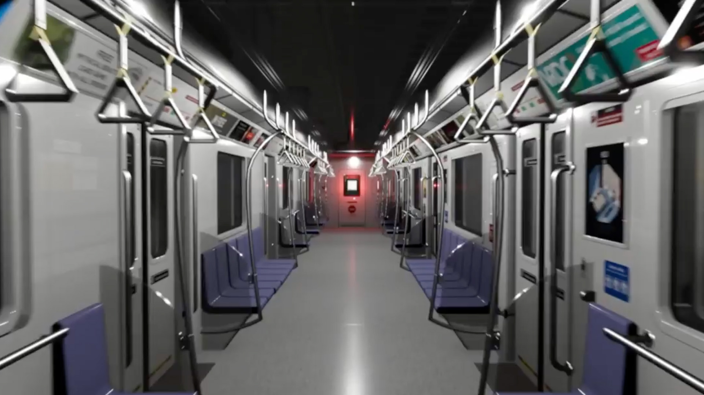
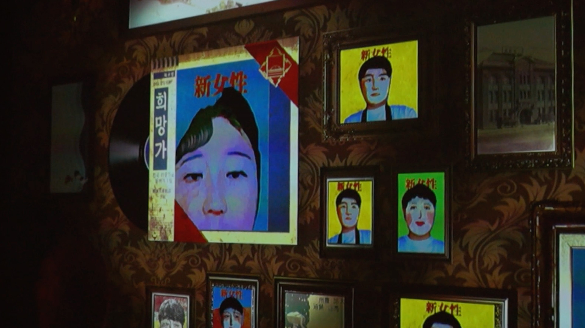
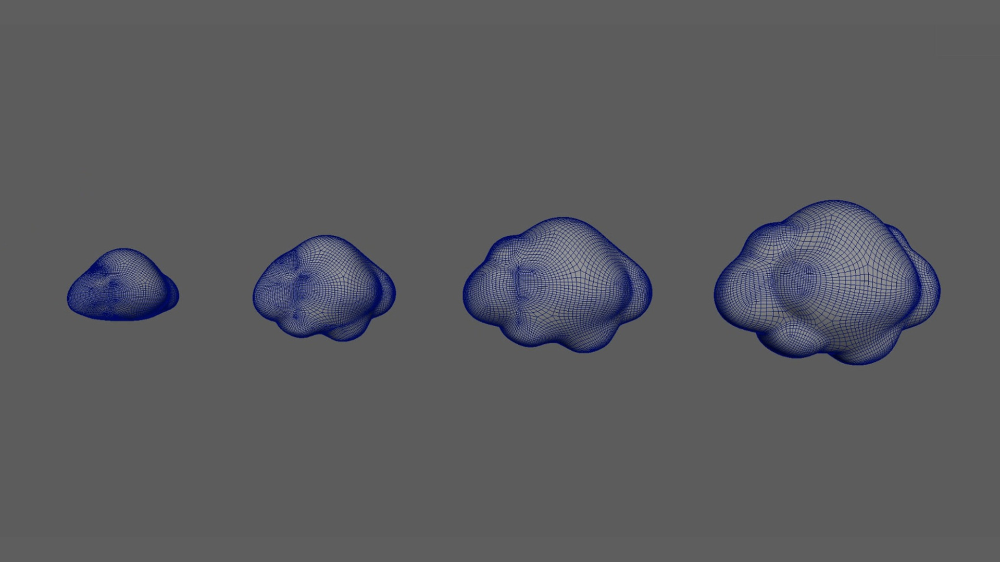
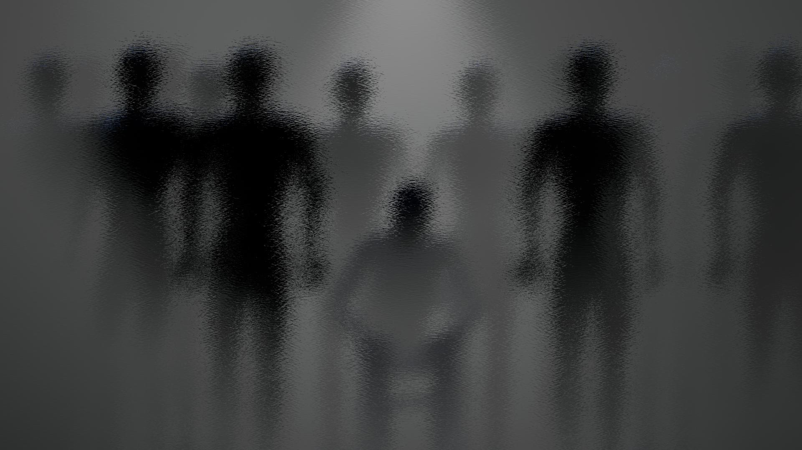
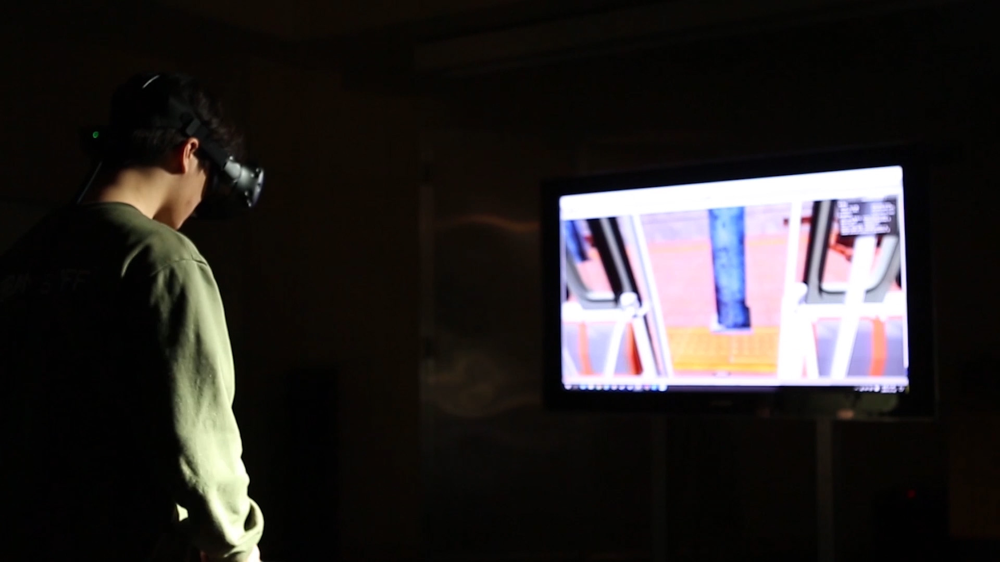
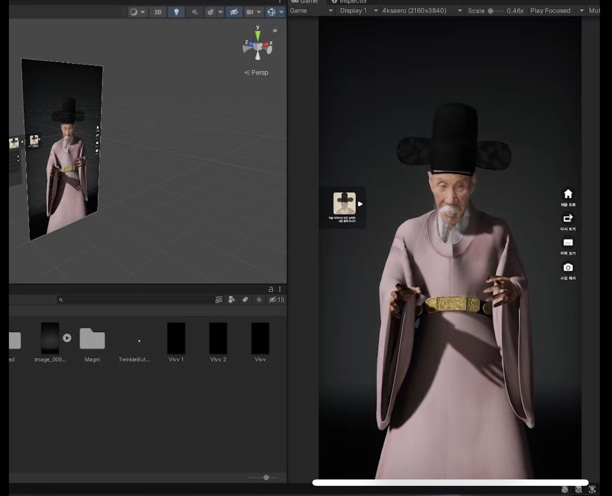

UNITY · C# · VR · NPC DIALOGUE · PUZZLE STATE
Developed a VR escape game in which conversations with an AI-driven guard serve as a playable puzzle. Integrated dialogue with clue discovery and progression conditions, giving the player's choices a clear in-world consequence.

UNITY · C# · TCP/UDP · PYTHON · OPENCV
Built a visitor-facing portrait system supporting up to four simultaneous participants. Connected Unity visual processing and an external exhibition display using TCP/UDP within a larger capture, composition, and output workflow.

UNITY · C# · HLSL · INTERACTION FEEDBACK
Implemented runtime control and visual systems for an artist-led game: cloud deformation, shader-driven movement and raymarched droplet forms. Kept gameplay states and responsive rendering controls distinct.

UNITY XR · HAND TRACKING · INTERACTION STATE
Built Unity XR encounters where tracked-hand actions change objects, materials, and scene responses. Designed interaction around what the participant can physically do and how the world acknowledges it.

UNITY · PARTICLES · RENDERTEXTURE · VR
Created a spray-paint interaction using transient particle feedback and accumulated marks on a RenderTexture. Mapped player actions to persistent visual changes in the virtual environment.

06 / CHARACTER INTEGRATION UNITY HDRP · CHARACTER RUNTIME · ANIMATION
Integrated digital-human assets, performance data, animation, and runtime presentation into a visitor-facing museum system. Linked prepared character content with an interactive Unity application.